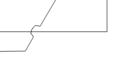
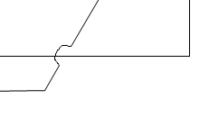
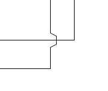
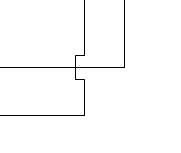
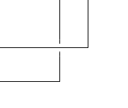
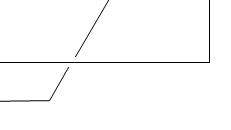

Summary: Currently, Sirius proposes 3 types of jump links: "Semi-Circle", "Square" and "Chamfered". The goal of this feature is to offer a new type of jump links named "Tunnel".
| Version | Status | Date | Authors | Changes | |---------|-----------|------------|-----------|---------------------| | v0.1 | DRAFT | 2019-12-04 | lredor | Initial version. | | v0.3 | ACCEPTED | 2020-01-17 | lredor | Changes after review |
Relevant tickets:
Currently, when you select an edge, you can activate the "Jump Links" feature through the Sirius Appearance tab of the properties view by changing the jump links status.
Status:
Type There are currently 3 types of jump link:
 





The "Reverse jump links" only changes the side where the "jump" is drawn:

The goal of this feature is to offer a new type of jump links named "Tunnel". This new type will complete the 3 existing types in the properties view:

The change concerning properties view will be done in
org.eclipse.gmf.runtime.diagram.ui.properties.sections.appearance.ConnectionAppearancePropertySection inherited by
org.eclipse.sirius.diagram.ui.tools.internal.properties.DiagramConnectionAppearancePropertySection.
Only a specific drawing will be necessary for this new type. For this type, we let a blank instead of the "semi-circle", "chamfered" or "square". To have a better visual aspect the blank will correspond to a half of a classical "jump".
 
This drawing will be handled in
org.eclipse.gmf.runtime.draw2d.ui.figures.PolylineConnectionEx through method
outlineShape(Graphics).
All the behaviors will be the same than existing types. Here are some examples (list not necessarily exhaustive):
To resume, the main part of this feature will be done directly in GMF:
This feature will be available only in RCP as it is massively based on an existing GMF feature.
Two new version of GMF (one for notation, one for runtime) will be released for this feature. So Sirius will have to consume these new versions.
No migration is necessary. But as soon as the new value is used, the model can not be opened with a previous version of Sirius. A migration participant that do nothing will be added to "change" the aird file version.
The Sirius metamodel will not be changed. The GMF metamodel will be changed to add a new Enum value to the type
org.eclipse.gmf.runtime.notation.JumpLinkType:
<eClassifiers xsi:type="ecore:EEnum" name="JumpLinkType">
<eLiterals name="Semicircle"/>
<eLiterals name="Square" value="1"/>
<eLiterals name="Chamfered" value="2"/>
++<eLiterals name="Tunnel" value="3"/>
</eClassifiers>
A generation for the GMF CDO native part will be necessary. We must also consider the GMF CDO implementation hosted in the CDO repository. It will be probably impacted by this change.
No API change except the new above EEnum value.
Only properties view will be changed to display the new jump link type.
This new type must be documented in the New and Noteworthy documentation. There is currently no Sirius documentation about "Jump links" feature so a full chapter must be added (in the section "Sirius/Sirius User Manual/Diagrams/Features Overview/Manage edges").
Manual tests must be added with the following matrix:
There is no notion of transparency in the drawing. Only a "emtpy segment" is added instead of the "jump" of other type. This avoids to add new points computation.